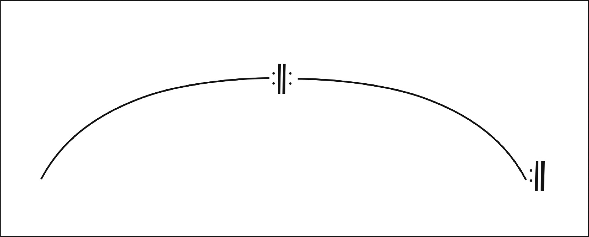

As formas musicais podem ser classificadas a partir da análise das seções que compõem a obra
musical.
Observe o diagrama a seguir, que representa a forma binária:

Com base nesse diagrama, pode-se afirmar que
-
a forma binária se caracteriza pela estrutura AA'.
-
a forma binária foi criada no período Clássico.
-
a primeira parte termina na tônica.
-
a segunda parte termina na dominante.
-
Os sinais de repetição não alteram a forma.